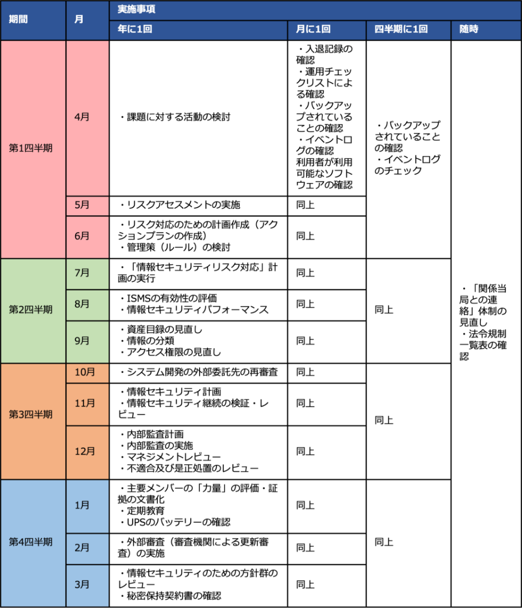

19-3-1. 今後のアクション
本テキストでは、「DX推進の必要性からセキュリティ対策の実施手順を策定する」ところまでを解説しました。本テキストの内容を実践するにあたって行うべき事項を列挙し、概要を説明します。
本テキストの内容を実践するために行うべき事項
- テキストに記載された各章の理解を深め、経営者を含めた関係者と共有すること
- 経営者のリーダーシップによって社内体制を整備すること
- 整備した社内体制において順次具体的なアクションを実践すること
テキストに記載された各章の理解を深め、経営者を含めた関係者と共有すること
各章のポイントの理解
テキストに記載された「セキュリティを考える上で必要となる社会情勢、国の施策に関する情報」、「セキュリティ対策を検討する上で必要となるセキュリティ知識」、「セキュリティ対策を実施するための具体的な手法」を再認識し、理解を深めること。
DX推進の考え方の把握
-
社会情勢、国の施策からDX推進の方向性
中小企業においてもDX推進が必要であること。 -
自組織におけるDX推進のための人材育成の必要性
DXを推進する人材（DX推進スキル標準で示されたスキルを有する人材）や、DXを有効に利用できる人材（DXリテラシー標準で示されたスキルを有する人材（※プラスセキュリティを含む））の確保が必要であること。 -
自組織としてのDX推進の計画立案・実施内容の認識
DX推進にあたってはDX with Security（DXの推進にあたり、セキュリティ対策を十分に考慮する）、IT構築にあたってはSecurity by Design（設計段階からのセキュリティ対策を考慮する）を意識すること。
セキュリティ対策の全容の認識
サイバーセキュリティの脅威に対処するためのアプローチ手法としては「クイックアプローチ」「ベースラインアプローチ」「網羅的アプローチ」があり、それぞれのアプローチ方法には長所・短所があること。たとえば、ISMSなどのフレームワークを用いた網羅的アプローチは、時間とコストがかかるという短所があるものの、漏れのない対策が可能であるという長所があること。ISMSの仕組みや、管理策の全容を理解すること。
自組織でのセキュリティ対策の実施項目の認識
自組織としての目標設定
自組織のリスクを、経営上および社会的に許容できる範囲まで低減させるセキュリティ対策を実践すること。
- 1.リスクアセスメントによって自組織の現状のリスクを把握する。
- 2.リスクアセスメントの結果を踏まえ、管理策の中から自組織として実施すべき項目を選定する。
- 3.実施する管理策に関して、自組織としての実施手順を策定する。
経営者のリーダーシップによって社内体制を整備すること
実施手順の実践準備
実施手順として策定した内容を実践するため、実行性のあるドキュメント（仕様書、運用マニュアルなど）を作成します。
実施手順の実践
実践にあたり、セキュリティ担当者とその役割・責任を決める必要があります。セキュリティ担当者とその役割・責任が決まった後、年間計画を作成して実践を行います。
-
1.組織体制と役割の決定
セキュリティ対策を実施するための組織体制、役割・責任を決めます。※第13章 13-2-3「管理策：5.3 組織の役割、責任及び権限」を参照。
-
2.年間を通して実践すべき事項の例示
担当者がその役割・責任において次のような事項を実施します。これらの事項を実践するため、年間計画を作成します。※第13章 13-2-6「管理策：8.1 運用の計画及び管理」を参照。
- リスクアセスメントの実施、リスク対応のための計画作成、管理策の検討
- 資産台帳の見直し
- 事業継続に関する試験
- 内部監査
- マネジメントレビュー
- 不適合及び是正処置のレビュー
- 定期教育
- 外部審査
- 情報セキュリティのための方針群のレビュー
- 秘密保持契約書の確認
- 「関係当局との連絡」体制の見直し
- 法令規制一覧表の確認
- 運用チェックリストによる確認
- 入退記録の確認
など

上記の内容を実施するための年間計画を作成
年間計画（例）を紹介します。
図83. 年間計画（例）
確立した社内体制において順次具体的なアクションを実践すること
管理策を実践するための参考となる情報
組織の中で具体的にどのように実施手順の内容を実践していくか、その際に参考となる各種資料や、実務的な取組例を紹介します。
管理策を実践するための参考となる情報
ISO/IEC 27002:2022 対応 情報セキュリティ管理策実践ガイド
ISMS推進マニュアル - 活用ガイドブック ISO/IEC 27001:2022 対応1.0版
JISC「JIS Q 27000 情報技術－セキュリティ技術－情報セキュリティマネジメントシステム－用語」
ISO/IEC 27002:2022
実施手順を具体的に実践していくための取組例を紹介します。
以下は、実施手順を実際の業務として実践していくにあたり、実施手順と主体となって取組む必要がある担当者を対応付ける例です。
図84. 実施手順とメインとなる担当者を対応付ける例
〇：主体となって取組む必要がある。
継続的な情報収集
本テキストに記載の「①国の方針、社会の現状と今後の動向」、「②IT活用事例」、「③セキュリティインシデント事例」における内容は、日々更新されていきます。これらの情報を継続的に学ぶために参考となる文献を紹介します。
①国の方針、社会の現状と今後の動向
デジタルガバナンス・コード2.0
経済財政運営と改革の基本方針2023
サイバーセキュリティ2023の概要
サイバーセキュリティ戦略 Cybersecurity for All 誰も取り残さないサイバーセキュリティ
②IT活用事例
中堅・中小企業等向け「デジタルガバナンス・コード」実践の手引き
「DX Selection 2023」選定企業レポート
③セキュリティインシデント事例
情報セキュリティ白書2022
情報セキュリティ10大脅威 2023
サイバー攻撃を受けた組織における対応事例集（実事例における学びと気づきに関する調査研究）
コンピュータウイルス・不正アクセスの届出事例 ［2022年下半期（7月～12月）］
令和4年におけるサイバー空間をめぐる脅威の情勢等について（警察庁）
2021年度 中小企業における情報セキュリティ対策に関する実態調査 -事例集-
人材育成
今後のビジネス発展のためには、人材育成が不可欠となります。人材育成を実践するために参考となる文献を紹介します。
①DSSに基づく人材育成
デジタルスキル標準Ver.1.1 2023年8月
②プラス・セキュリティ人材の育成
「プラス・セキュリティ知識」とは？
サイバーセキュリティ経営ガイドラインVer2.0付録Fサイバーセキュリティ体制構築・人材確保の手引き～ ユーザー企業におけるサイバーセキュリティ対策のための組織づくりと従事する人材の育成～第1版